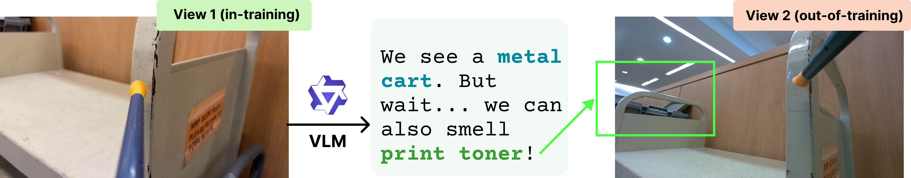
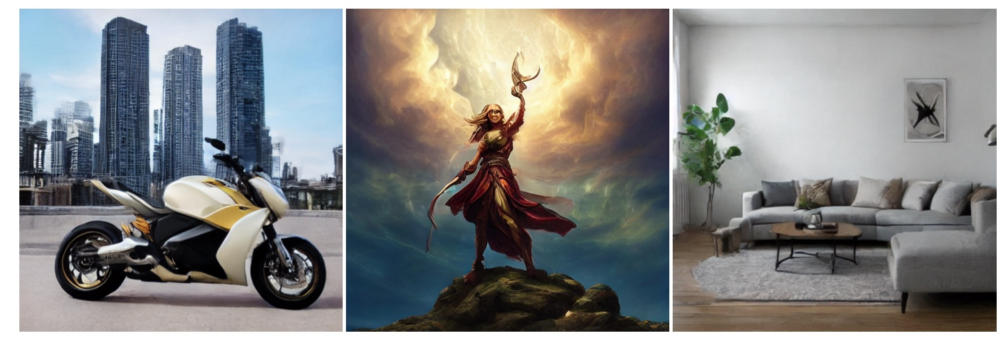
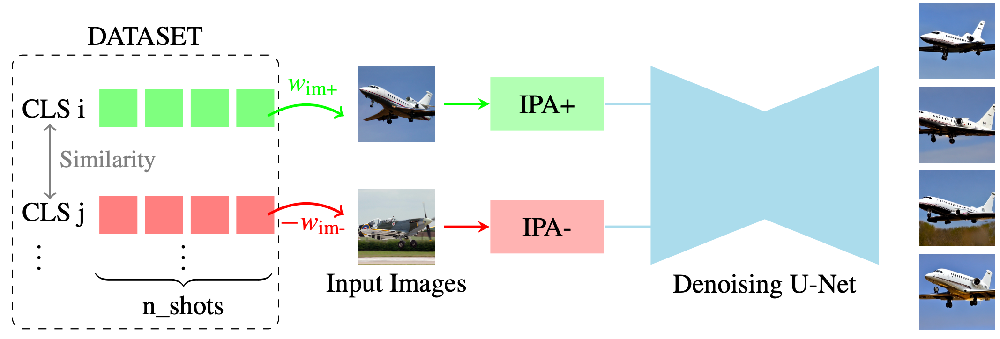
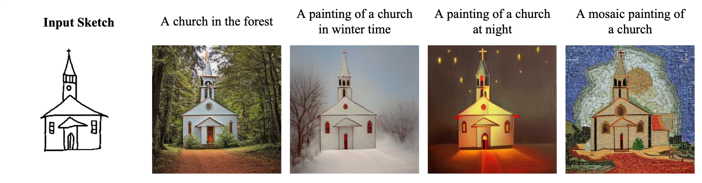

|
Eleftherios Tsonis Hi, I'm Eleftherios, though my friends and most people call me Lefteris! I am a PhD student at École Polytechnique, where I am fortunate to be advised by Prof. Vicky Kalogeiton and Prof. Xi Wang. I am part of the VISTA team at the Computer Science Laboratory (LIX). Prior to this, I was affiliated with the Artificial Intelligence & Learning Systems (AILS) Lab. I earned my Diploma in Electrical & Computer Engineering from the National Technical University of Athens (NTUA). 📧 Email / 🎓 Scholar / 📄 LinkedIn / 🖼️ Gallery / 💻 Github |
My research interests lie in multimodal learning, spanning both generative modeling and representation learning across modalities. I am particularly interested in making these systems more expressive, grounded, and effective in real-world contexts.
|
 |
What Images Cannot Say: Language-Guided Olfactory Representation Learning
Eleftherios Tsonis, Xi Wang, Vicky Kalogeiton ECCV, 2026 [arXiv] [website] |
|
 |
One-step Diffusion Models with Bregman Density Ratio Matching
Yuanzhi Zhu, Eleftherios Tsonis, Lucas Degeorge, Vicky Kalogeiton EurIPS Principles of Generative Modeling (PriGM) Workshop, 2025 [arXiv] |
|
 |
Training-Free Synthetic Data Generation with Dual IP-Adapter Guidance
Luc Boudier*, Loris Manganelli*, Eleftherios Tsonis*, Nicolas Dufour, Vicky Kalogeiton BMVC, 2025 [arXiv] [website] [code] |
|
 |
U-Sketch: Bridging the Gap for Efficient and Realistic Sketch-to-Image Synthesis
Ilias Mitsouras, Eleftherios Tsonis, Paraskevi Tzouveli, Athanasios Voulodimos IEEE Access, 2026 [IEEE] [arXiv] |